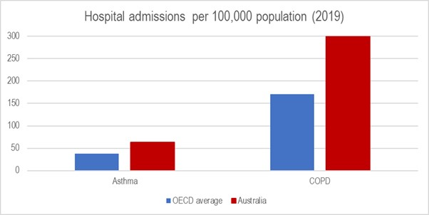
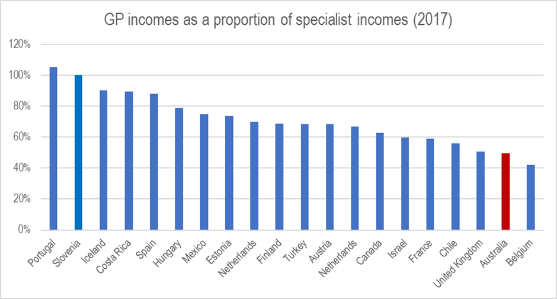

This is an edited version of an article that first appeared in Crikey on 3 June 2022.
As I see it, the four most pressing challenges for the new Minister for health and ageing concern: 1. promoting health (not just treating disease); 2. addressing the disconnect between care settings (particularly hospital, primary and dental care), 3. fixing the private sector; and 4. addressing the national disgrace that is aged care.
‘Health’ is much more than medical interventions
Firstly, the portfolio needs to encompass health, not just healthcare. The distinction is important. Health is more than the absence of disease. Healthcare is mostly concerned with treating illness. It has little to say about promoting health and avoiding illness unless it involves medical interventions (part of the problem is how we pay for care… but we’ll get to that).
The most pressing issue is the pandemic, which is far from over. The new government needs to listen to experts and work with, not against, the states and territories on containing it. In fact, COVID-19 perfectly demonstrates the value of public health interventions. They suppress spread (distancing, masks, periodic restrictions) and severity (vaccination).
Beyond that, we need to invest more in promoting health especially in tackling “upstream” risk factors. We have a pedigree here. Australia led the world in reducing tobacco use — a globally recognised public health success despite a determined campaign opposing it. Nicola Roxon, the health minister at the time, did a very good job standing up to vested interests.
The minister was less successful at adjusting the cataract surgery rebate to align with the cost-effectiveness of Medicare reimbursement for other procedures. To be fair, this was a harder sell than tobacco but it nevertheless illustrated Machiavelli’s timeless observation that:
“...nothing is more difficult to plan, more doubtful of success, nor more dangerous to manage than a new system [...] for the initiator has the enmity of all who would profit by the preservation of the existing ways and merely lukewarm defenders in those who gain by the new ones.”
It also confirmed the golden equation of health care: every $ of spending = a $ of income (sometimes a very good income indeed.) It's now well established that the most powerful determinants of health (and disease) are social and economic. Inequality is especially harmful. It reduces everyone’s health, not just those at the bottom. The government has the levers controlling many of the factors affecting our health: education, tax, housing, social services and welfare. Public housing -- neglected over the past decade -- can deliver some quick health wins. Unsurprisingly, improved housing availability and quality has been shown to reduce hospital admissions and re-admissions. We need health in all policies across the relevant portfolios and through the Council of Australian Governments (COAG). Sorting out health care What we call the health system in fact covers mainly medical care. It's an illness system and, to be honest, it’s a stretch to call it a system at all; it’s more like patchwork, a marble cake that’s increasingly struggling to address modern demands of chronic, non-communicable disease, multi-morbidity and mental ill health. Some serious changes are needed to improve how the current arrangements work for patients and consumers as well as those for those who toil every day to deliver care (who have really copped it throughout the pandemic). Mental health care is probably the biggest illustration of the problems and challenges we have . We need to listen to patients, consumers and experts about how to invest in the prevention and treatment of mental ill health. The current ‘system’ is broken – and the current disconnect between primary, community and hospital care is a major contributor. Hospitals are expensive and at times dangerous places. We must do everything we can to keep patients out of them, and if not, to ensure that their stay is as short and as safe as possible. I concede that this is difficult under a funding model that rewards activity and I caution against simply throwing more money at public hospitals. Inflating the balloon won’t reduce the pressure. While the states run our public hospitals, the Commonwealth is responsible for primary care. Rising levels of chronic disease mean that our GPs and allied health professionals are on the frontline in helping people manage their health problems and keep them out of hospital. It also gives them a landing pad after they leave acute care, freeing up beds faster and helping reduce wait times at the front door. (Most states need sub-acute beds and more social care for people who may have trouble coping at home -- there are massive savings on offer by reducing the number of ‘boomerang’ patients.) But we have a GP shortage in areas of greatest need (the inverse care law). Many patients don’t see their doctor because of high out-of-pocket costs (bulk billing data is a sham). Little wonder that compared to those living in other OECD countries, Australians are almost twice as likely to be admitted for respiratory conditions, most of which should be managed out of hospital.

SOURCE: OECD.STAT We can bolster primary and community care in several ways. We should ensure that electronic medical records used in public hospitals can exchange information with those used in other settings, especially GPs and pharmacies. My Health Record isn’t working. The privacy risks can be managed. The benefits of integration can be considerable. In the long term, we need a discussion with our medical colleagues about changing the training, socialisation and culture of medicine to value generalists as highly as specialists. Doctors are human so part of that is about money and a career in general practice (a specialisation in its own right) should be a financially attractive option. Among OECD countries that provide this data, Australia has the second-lowest GP income rates relative to their specialist colleagues. We need to change this by increasing how much GPs earn. (Reducing the amount specialists earn is not a fight I would advise anybody to pick - see the cataract example above and what Nye Bevan had to say).
SOURCE: OECD.STAT Follow the money ... FFS Many of the problems we have boil down to how we pay for health care. We don't pay for health, nor can we because we're hopeless at measuring it. So the prevailing approach fee-for-service (with the apt acronym of FFS) with the implicit assumption that the service produce health. Aside from the fact that this assumption often incorrect, FFS is probably the worst way to fund care that seeks to provide joined-up services for the growing number of people with multiple morbidity and complex health and social care needs. (Those suffering from mental ill health are a prime example). In the interim, we should at least structure FFS to reflect various levels of patient complexity. Providers must have an incentive to invest the time to help their most vulnerable patients. A good start would be to raise the Medicare rebate for general consultations. This should at least begin to improve access for our poorest (and sickest). But some point, we need to discuss ways to fund care that rewards value, not volume – both in general practice and hospitals. There are calls to unify the funding source for both. This would be the perfect solution. Given their overall vastly superior performance in managing COVID-19, I’d argue that the states would be better placed to manage and fund a unified health system in each jurisdiction. But I suspect that convincing any government to relinquish control of health care is highly ambitious. A national health reform commission, however, could begin drawing up transition in funding to deal with this and other challenges we face. There’s plenty of alternatives to FFS. Perhaps we could try paying providers a lump sum per patient based on their level of health need (Gonski for health). We could incentivise people registering with primary care providers. We could encourage more care integration by bundling payments across the entire care cycle rather than pay for each individual component as if the patient were a product on an assembly line (albeit a very inefficient assembly line that would have Henry Ford spinning in his grave). This commission -- comprising representatives of patients and consumer experts as well as the usual suspects from the clinical world and academia -- would be well placed to begin incorporating dental care in the health system. This is a much-needed reform that can 1. alleviate a lot of immediate suffering, 2. improve overall health, and 3. reduce pressure on other parts of the system. ‘Private’ health needs a major rethink Most Australians receive elective procedures in the private sector. “Private” healthcare in this country is a cosy arrangement between insurers and providers, all propped up by billions courtesy of the taxpayer each year. The truth is that private health diverts resources away from the public sector, rather than taking pressure off it. The result is a two-tiered arrangement where those who can afford it get care (sometimes excessive and unnecessary care) while those who can’t go without, languishing on waiting lists. Little wonder the industry is in real trouble. We can have a private sector (we will continue to have one regardless of what anybody thinks or says) but it must be designed to serve consumers — not providers and insurers. Several things can be done. Stronger regulation on fees and charges, including better transparency and limits. Also, why not publish provider outcomes so that patients can assess the quality they’re getting for their money? We need to press on with efforts to modernise the Medicare Benefits Schedule, which is full of items that are obsolete or do not reflect effective, high-value care. And maybe giving more say to health funds in how care is delivered could improve efficiency and value in the sector. Markets: a good servant, poor master -- just look at aged care The most fundamental tenet is this: health isn’t a commodity, and healthcare is fundamentally different to any other service or product. Market forces can play a role (note the health systems of Israel or the Netherlands) but they must be carefully guided and regulated. Relinquishing it all to the invisible hand will simply result in paying more for worse health outcomes. For evidence, just look at the USA. In fact, we need not look abroad at all. Australian aged care is a prime example of what happens when we leave it to all to the market. It’s a complete mess, and a taskforce to implement the Royal Commission findings is needed as soon as possible. In a nutshell: more regulation, outcomes data, consumer protection and better pay for care staff. (We often hear 'you pay peanuts you get monkeys'. Well, if this is true it applies equally here just as it does for executive remuneration.) We shouldn't waste a day.
In terms of health and not healthcare, you suggest that:"The most pressing issue is the pandemic". I disagree with that -- even in the pandemic vastly more people died of preventable heart disease (and still do) than coronavirus. Many more people also died of bowel cancer (let alone if you want to count in years lost), which is likely to be largely caused by excessive red meat consumption and to a lesser extent being overweight. So if you want take the most pressing issue as 'kills the most people' vs 'in people's minds' I imagine these should be considered more important. The first one of these is interesting because unlike other areas of health which have very successful (e.g., smoking, skin cancer, HIV), getting people to eat sensibly or burn more calories via activity has in fact been almost impossible to change -- apparently 75% of men and 60% of women are overweight. If this was back to levels of a few decades ago, heart disease and hence associated deaths would be significantly reduced. The second one I suspect is correlated with the first in that getting people to change their diets seems rather difficult.
Thanks for the comment Conrad. My own impression — not based on any stats — is that a lot more people are trying to get basic exercise, but that exercise has a very small impact on reducing people's being overweight. Is that right?
Support from early in pregnancy for single mothers. One of the most effective interventions.
For weight loss it's about diet. Running/walking of a bottle of coke takes a LOT of running/walking: "you can't outrun a bad diet". One newish idea is that it is about feeling full (satiation) - so getting protein and fibre (which are eliminated from junk food). For a book length treatment, mostly about non-human animals, https://www.amazon.com/Eat-Like-Animals-Teaches-Science/dp/0358561892/ref=sr_1_1?crid=3EZ8FPRCLCU1P&keywords=eat+like+the+animals&qid=1655512648&sprefix=eat%2520like%2520the%2520animal%2Caps%2C304&sr=8-1
It depends on what you define as exercise. The most common way people put on weight is slowly over time (a kilo or two a year), so in fact the amount of excess calories people consume most of the time is not a whole lot, so bad diet can only really be part of the problem (no doubt it is a part -- especially in drinkable calories in booze and caffeinated drinks which are part of our social culture). It's not like people had good diets 30 years ago -- ours are probably higher in nutritional value today. So if you don't need to change the number of calories much to not put on weight, then you don't need to lose that many to stay at a stable state in terms of how much you eat. As it happens, any exercise is difficult for people to get in some places where you can't get it incidentally, which is is probably the case for most people. There are for lots of reason for this (poor city design, overwork, children, ...). So if people sit around all day at work, it is unsurprising people consume more than they need. As an experiment people can do when thinking about this, it is good to start at how many calories you actually need if you are sedentary -- basically 2000-2500. You can then look at how many calories are in things, and if you want 3 meals a day, you can get there very easily. There are apps which you can do that track this (although I don't know of any good ones due the fact meals are so variable), and many fast food joints now have the calorie contents of meals. Add a few boozy weekends/business meetings and it i very easy to see how people go over. You can also look at how many calories are burnt by exercise. As an example, according to my garmin, I use about 400-500 calories walking perr an hour. So if I walk an hour in the day, this adds about 20% more calories needed than the sedentary state. Given this, if I don't tend to eat that much over the amount I need, then burning what looks like a small amount nevertheless solves the problem of weight gain. So small changes shouldn't be overlooked (that would include other things too -- giving up booze, cooking slightly less calorific things).
Re the (weak, lots of confounding ) correlation of meat eating and cancer https://errorstatistics.com/2015/05/04/spurious-correlations-death-by-getting-tangled-in-bedsheets-and-the-consumption-of-cheese-aris-spanos/ sure eat less walk more, but that’s boring and no basis for a ,crusade...
Sensible suggestions. The obvious bit that is missing is that, if there is a shortage of GP's, why don't we just train more instead of making them richer? Apart from everything else increasing their income increases the incentive to work less.